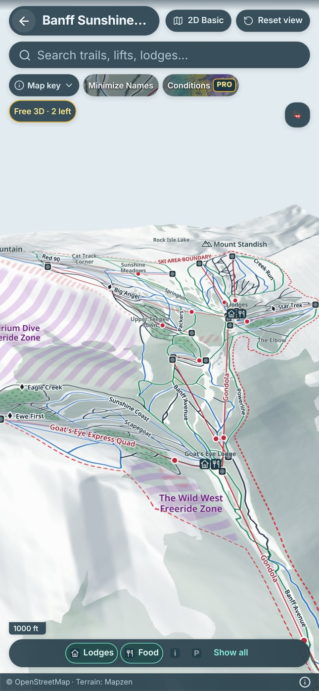
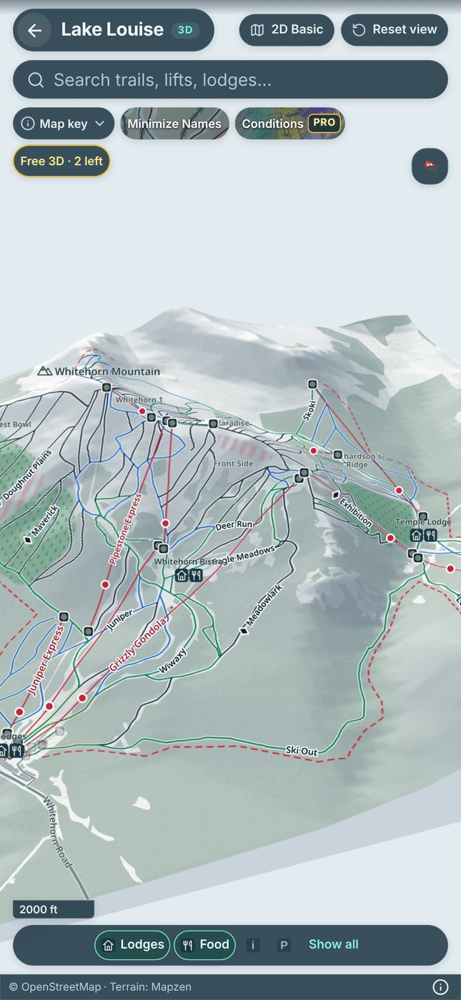
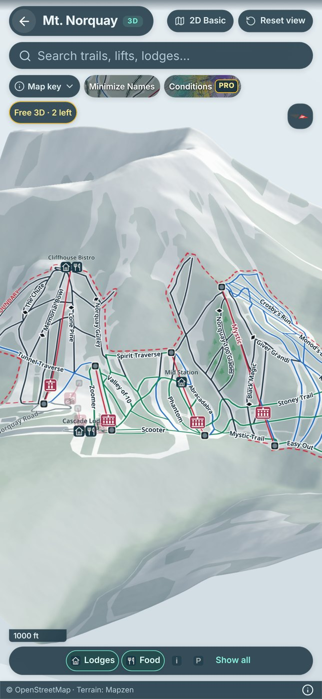

In early October, while almost every ski area in the Northern Hemisphere is still brown, people are already skiing at Levi in Finnish Lapland. There is no glacier there, and it has not been snowing. The snow on the Front Slopes was made last winter, pushed into enormous piles in spring, and kept under cover all summer long.
It is called snow farming, and a growing number of resorts and Nordic centers now open their season with it.
How do you keep snow through a whole summer?
At the end of the season, groomers push snow into a tall, tightly packed mound. Much of it is machine-made in the coldest weeks of winter, when snowmaking is cheapest. A bigger pile works better because there is less surface for the amount of snow inside, so a smaller share of it melts.
Then the whole thing gets buried. Davos, in Switzerland, covers its roughly 20,000 cubic meter pile with a 40 centimeter layer of sawdust and says about 80 percent of it is still there in autumn. At the end of October, that pile is spread out into a cross-country trail about four kilometers long.
Why sawdust, of all things?
Sawdust works partly like a blanket, but the clever part is that it stays wet. Researchers at the WSL Institute for Snow and Avalanche Research SLF in Davos measured covered piles in Davos and South Tyrol over a full summer. Most of the sun's energy never reached the snow. The damp sawdust and wood chips soaked it up, and as the moisture evaporated it carried that heat away into the air. Meltwater from the pile keeps wicking back up into the chips, so the cooling keeps going all summer.
Their model found that a 40 centimeter layer of wet sawdust and wood chips cut the energy reaching the snow about twelvefold. The Davos pile kept more than three quarters of its volume through the summer. A thinner layer loses most of the benefit, which is why the piles you see look buried rather than dusted.

Where it happens
Levi and Ruka, Finland
The two Lapland resorts have turned snow farming into an October tradition. Both opened the 2026–27 season on October 2. Levi stored close to 300,000 cubic meters of snow from the 2024–25 winter and says it has invested nearly €1 million in snow farming material. The stored snow also secures its early-season World Cup slalom. Ruka began experimenting with stored snow in the late 1990s. Sawdust is the messiest cover but keeps around 80 percent of the snow, while white fabric is easier to handle and can lose up to 40 percent.
Kitzbühel, Austria
Kitzbühel keeps a depot of around 30,000 cubic meters at the Resterhöhe, pushed together by groomers right after the season and wrapped in foil and white fleece. In October 2019 it spread the snow into a strip about 700 meters long down an otherwise green mountain. Photos of that white line in the grass went around the world, and environmental groups criticized it. Josef Burger, head of the Kitzbühel lift company, answered: “I can understand that a white track in the middle of grass is not to everyone's liking, but what we do is ecologically and economically relevant.” The resort has since cut back to a single depot, and this season it planned to open on November 6.
Canmore Nordic Centre, Alberta
North America's best-known example is Frozen Thunder at the Canmore Nordic Centre, which has used stored snow since 2009. Crews make snow from January to March, cover it with half a meter of sawdust in April or May, and roll it out in October. Skiing starts as early as mid-October, and national ski teams use it for their first on-snow training of the year. The Craftsbury Outdoor Center in Vermont and Baldy Mountain in British Columbia store snow the same way.
Is it worth it?
Snow farming is not free. A well-covered pile still loses a fifth to a third of its snow, more under a thin cover, and someone has to move and dispose of tons of wet sawdust. But snow made in January is far cheaper than snow made during a warm November, and a stored pile does not care whether autumn turns cold on time. For a resort that needs to open on a fixed date, or a race that cannot move, that certainty is the point.
Whether a white ribbon on a green mountain looks like smart resource management or a warning sign depends a lot on who you ask.
See these mountains in 3D
Canmore's stored-snow track sits a short drive from Banff, and all three Banff-area ski areas are in GoSki as full 3D trail maps. So are the US resorts that fight to open first every fall. Spin the terrain, follow a run from the lift to the base, and see exactly how steep it is before you go.

Banff Sunshine VillageGondola to three mountains on the Continental Divide.
Lake LouiseOne of the biggest ski areas in Canada, across the valley from the lake.
Mt. NorquayBanff's town hill, a few minutes from downtown. Arapahoe BasinColorado ski area that is usually one of the first in the US to open.
Arapahoe BasinColorado ski area that is usually one of the first in the US to open.
 KillingtonThe East's biggest ski area and a regular in the race to open first.
KillingtonThe East's biggest ski area and a regular in the race to open first.
GoSki also shows the past 48 hours of snowfall and the next 48 hours of forecast snow at your mountains, live lift and trail status, and Storm Alerts when a big storm is lining up.
Sources
- Davos Klosters: 20,000 cubic meters of snow for a safe start to the season
- Grünewald, Wolfsperger and Lehning (2018), Snow farming: conserving snow over the summer season, The Cryosphere 12, 385–400
- SLF: Snowfarming, preserving snow over the summer
- Levi: Winter season opening 2026–2027
- Levi: Recycled snow secures Levi's World Cup competition
- SnowStash: Levi and Ruka snow farming, October 2026 opening
- Eye on the Arctic: Recycling snow in northern Finland for October skiers
- AFP via Phys.org: Austria's early ski slope sparks row among environmentalists
- Unofficial Networks: Kitzbühel plans Nov. 6 opening with snow saved from last winter
- Alberta Parks: Frozen Thunder, Canmore Nordic Centre
- The Weather Network: Snow farming might help the ski industry survive global warming
GoSki Stories are free to read and supported by ads. Ads and cookies